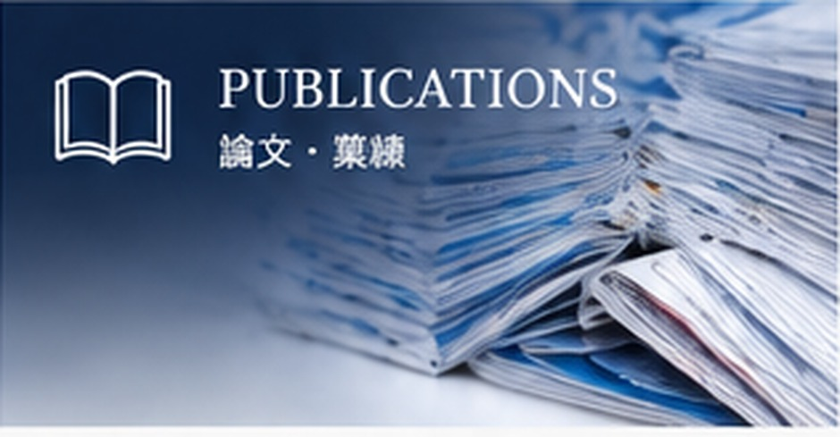
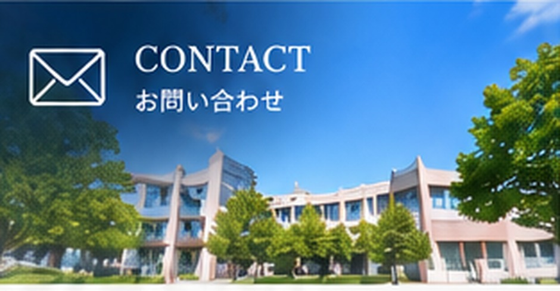

NEWS & TOPICS
最新情報・研究室の活動
 イベント第3回「紀伊半島〜山陰縦断！イオン液体コンファレンス」学生ワークショップ
イベント第3回「紀伊半島〜山陰縦断！イオン液体コンファレンス」学生ワークショップ
 イベント「トークシャワー・イン・九州2024」参加レポート
イベント「トークシャワー・イン・九州2024」参加レポート
 イベント奈良県主催 水素エネルギー啓発イベントに参加
イベント奈良県主催 水素エネルギー啓発イベントに参加
 研究・設備共通機器管理センター 分析機器セミナーを開催
研究・設備共通機器管理センター 分析機器セミナーを開催
 学生の活動GEAR5.0 × SHIMADZU 人材育成プログラム
学生の活動GEAR5.0 × SHIMADZU 人材育成プログラム活動記録：K-SMART公開情報より。写真はご提供の掲載画面を使用しています。

PUBLICATIONS
論文・業績
ORCID連携による論文一覧。
代表的な研究成果をご紹介します。
LAB MEMBERS
研究室メンバー
Members & Laboratory Life
教員・学生・卒業生を紹介。
研究室の活動をご覧ください。

CONTACT
お問い合わせ
共同研究・見学・ご相談など、
お気軽にお問い合わせください。